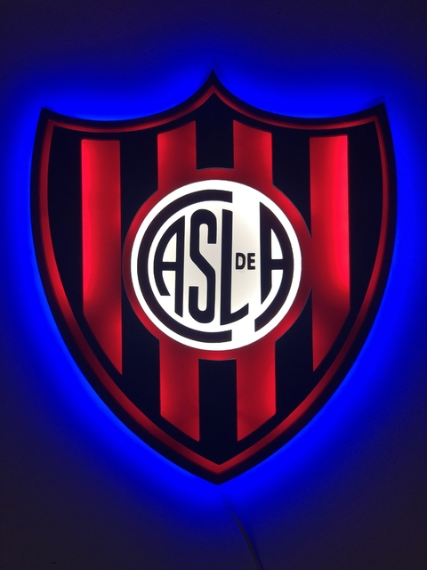
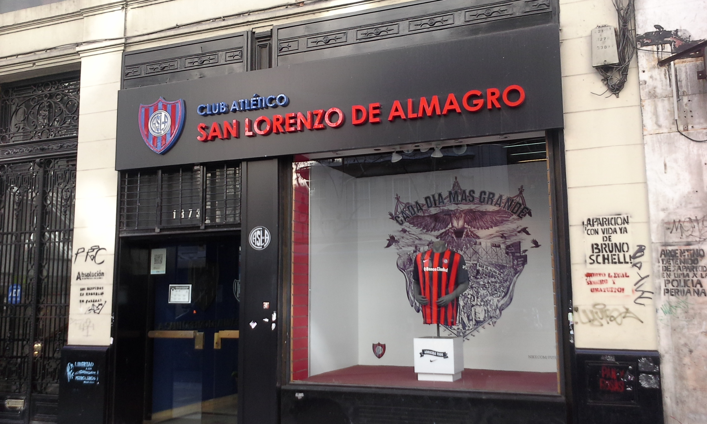
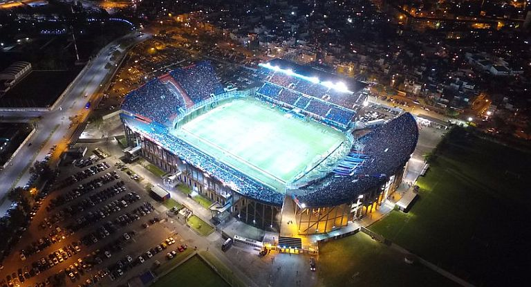

Historia acerca de San Lorenzo
El Club Atlético San Lorenzo de Almagro, mayormente conocido como San Lorenzo de Almagro o simplemente San Lorenzo, es una entidad deportiva de Buenos Aires, Argentina. Fue fundado el 1 de abril de 1908 en el barrio de Boedo por iniciativa de un grupo de jóvenes con la colaboración del sacerdote salesiano Lorenzo Massa. Su principal actividad es el fútbol masculino donde participa en la Primera División. También en el club se practica balonmano, baloncesto, futsal, gimnasia rítmica, natación, hockey entre otras disciplinas deportivas.
¿Se considera unos de los 5 grandes equipos de Argentina?
Sí. Es considerado como uno de los cinco grandes del fútbol argentino a partir de que la Asociación del Fútbol Argentino dispusiera la implementación del llamado "voto proporcional" en 1937, que consistía en darle mayor poder de decisión a aquellos clubes con mayor número de socios, mayor antigüedad y mayor cantidad de títulos.
Estadio San Lorenzo
Su actual estadio, el Pedro Bidegain, más conocido como El Nuevo Gasómetro y la Ciudad Deportiva se encuentran ubicados en la ciudad de Buenos Aires en el barrio de Flores, tiene capacidad para 47 964 espectadores y está dentro de los diez estadios más grandes de Argentina. Su anterior estadio, denominado El Gasómetro se encontraba en Avenida La Plata al 1700 en el barrio de Boedo, también conocido como el Wembley porteño fue el estadio que utilizaba la selección Argentina y llegó a tener un aforo de 75 000 personas. En la actualidad y tras una larga batalla legal llevada adelante principalmente por sus socios e hinchas, en 2021 la Legislatura de Buenos Aires aprobó la Ley de Rezonificación, por la cual el predio de Avenida La Plata y Las Casas donde se ubicaba el Viejo Gasómetro fue devuelto al club para la constitución de su actual sede social y futuro estadio.
